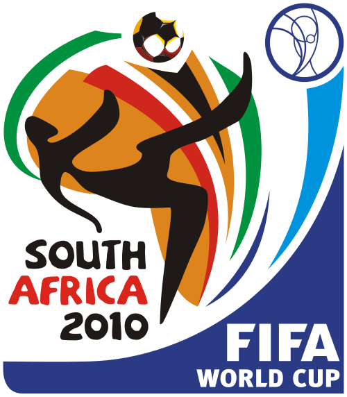

Обзоры финалов
Ниже собраны краткие обзоры всех финалов чемпионатов мира XXI века с результатами, авторами голов и ключевыми эпизодами.
2002 — Бразилия 2:0 Германия

Йокогама, 30 июня 2002 года. Роналдо забил два гола во втором тайме и принёс Бразилии пятый титул. Оливер Кан, признанный лучшим игроком турнира, ошибся при первом голе. Бразилия выиграла все семь матчей турнира.
2006 — Италия 1:1 (пен. 5:3) Франция

Берлин, 9 июля 2006 года. Зинедин Зидан открыл счёт с пенальти, Матерацци сравнял. В дополнительное время Зидан был удалён за удар головой в грудь Матерацци. В серии пенальти точнее были итальянцы — Трезеге промахнулся. Италия стала четырёхкратным чемпионом мира.
2010 — Испания 1:0 Нидерланды

Йоханнесбург, 11 июля 2010 года. Андрес Иньеста забил единственный гол на 116-й минуте. Испания впервые стала чемпионом мира. Матч запомнился 14 жёлтыми карточками и удалением Йориса Хювелда. Нидерланды проиграли свой третий финал.
2014 — Германия 1:0 Аргентина

Рио-де-Жанейро, 13 июля 2014 года. Марио Гётце забил на 113-й минуте. Германия стала четырёхкратным чемпионом. Аргентина с Месси уступила в финале третий раз. Германия стала первой европейской сборной, победившей на американском континенте.
2018 — Франция 4:2 Хорватия

Москва, 15 июля 2018 года. Самый результативный финал с 1966 года. Гризманн, Погба и Мбаппе забили по голу, ещё один мяч в свои ворота отправил Манджукич. Хорватия впервые играла в финале. Мбаппе стал вторым подростком после Пеле, забившим в финале ЧМ.
2022 — Аргентина 3:3 (пен. 4:2) Франция

Лусаил, 18 декабря 2022 года. Один из лучших финалов в истории. Месси забил два гола, Мбаппе — три. В серии пенальти точнее были аргентинцы. Месси наконец получил Кубок мира. Мбаппе стал первым с 1966 года, кто оформил хет-трик в финале.
2026 — Испания 1:0 Аргентина

Ист-Ратерфорд, июль 2026 года. Первый турнир с 48 командами и в трёх странах. Испания победила Аргентину в дополнительное время и стала двукратным чемпионом мира. Аргентина не смогла защитить титул.